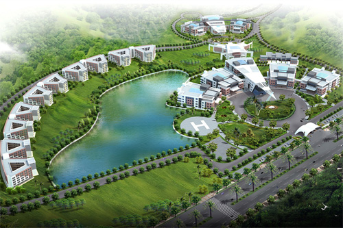

|  |
About usSanjay Ghodawat University (Formerly called Sanjay Ghodawat Group of Institutions) is the only Private (Self Financed) University in the South Western region belt of the Maharashtra State. Its uniqueness lies in the world class academic culture for innovative teaching – learning practices with an emphasis on research and innovation. The University has roped in the best of academic professionals and experts in the teaching field and provides a world class supportive infrastructure for the purpose. It offers UG, PG and PhD courses in Liberal Arts, Science, Commerce, Management, Technology, Architecture, Pharmacy and Computer Science and Applications. The President of the Sanjay Ghodawat University, Mr. Sanjay D. Ghodawat had commenced the Sanjay Ghodawat Group of Institutions in the year 2009. In the previous years the institute matured beyond expectations and was accredited by NBA and also received NAAC A Grade accreditation. The Times of India Survey had ranked the Institute with 44th Rank in the category of Upcoming Private Educational Institutes of the Nation. The natural progression was to evolve as a University. The Chairman’s vision is to produce leaders and workforce for the 21st century through the channel of the best educational practices around the globe. To encompass more creativity and freedom in offering and designing courses, curriculum, industry based practices, research based pedagogy which will help students to evolve as professionals and leaders with proactive outlook and societal concern the University was formed. |
Contact:
Sanjay Ghodawat University
Kolhapur - Sangli Highway,
A/p Atigre - 416 118
Tal. - Hatkanangale
Dist. - Kolhapur
Maharashtra, India
Toll Free : 1800 31300 1566